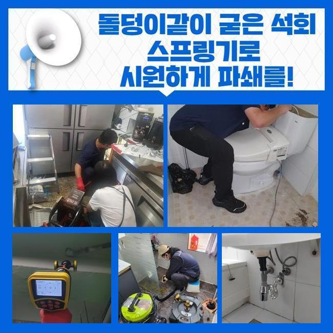
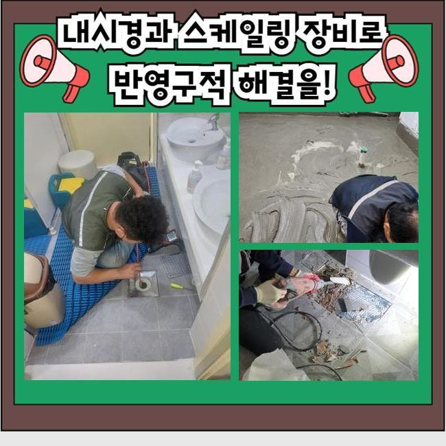
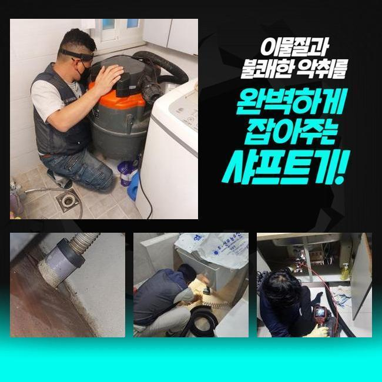
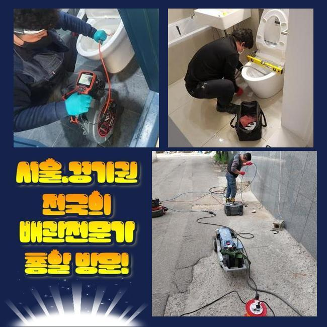
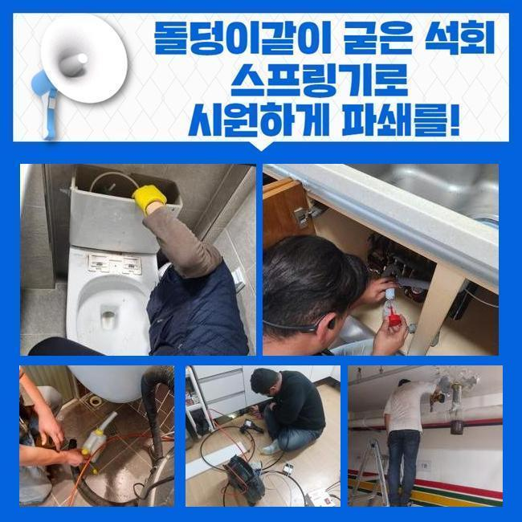
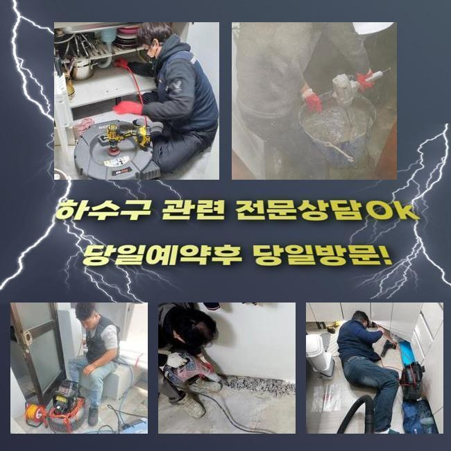
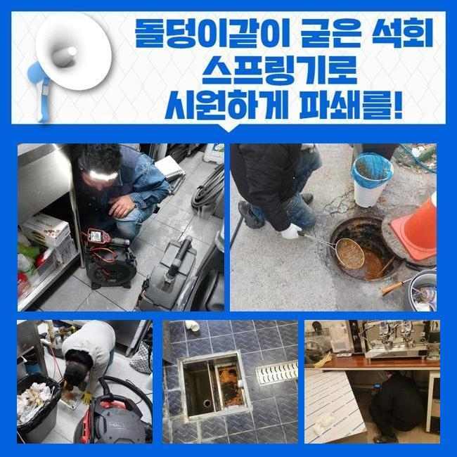

🏠 천안 와촌동세탁기배수구막힘 쌍용3동 하수구뚫는비용 설비출장
천안 하수구막힘 전문 시공 후기

📋 작업 개요
- 위치: 천안
- 서비스 유형: 하수구막힘, 배관막힘, 누수수리, 역류해결, 뚫는업체, 배관청소, 고압세척, 설비공사, 악취차단
- 작업 일시: 2024. 11. 13. 9:58
- 업체명: 하수구수사대 (010-5615-2118)
🔍 문제 상황
천안 와촌동세탁기배수구막힘 쌍용3동 하수구뚫는비용 설비출장
물이 안내려가서 난감하셨던 경우가 있으셨으리라 짐작을 내릴수가 있겠는데요
금번에 말씀해드리는 사안을 읽어보신다면 도움될거라고 생각합니다
우리팀은 저번주 화장실에서 나타난 통수고장으로 전화주신 의뢰인의 고민을 해결해드리고 왔어요
의뢰인은 화장실에 있는 생활하수가 지속적으로 흘러내려가지않아 생활에 지장을 겪으셨는데 우리팀이 내방하여 관로를 정확하게 관측하고 원인을 찾아냈어요
이어서 그부분을 조속히 처리해서 문의자께서 욕실공간을 과거와 같이 편하게 이용하시도록 도움을 드렸어요
그것에 더하여 의뢰인분에게 관리에 대한 요령을 말해드려 이후에 생길수있는 배수관 문제들을 예방토록 만들어 드렸죠
피트랩은 관 내부에서 수돗물이 적절하게 흘러나가는걸 방해해서 관로막힘을 유발할수 있어요
그리고 역류증상까지 출몰하기 쉬운 경우 물차단이 순조롭게 이루어지지 않아 추가적인 장애가 생겨날수 있죠
P형 트랩의 경우 벌레꼬임이나 오취를 막는데는 효과적이나 찌꺼기가 걸려버리고 막힘현상을 야기하는 결점들도 존재한답니다
그러므로 P트랩을 이용하신다면 사용자의 주의가 중요하죠
누적된 수돗물을 처치하고 피트랩을 관찰하여 적기에 세척을 이행하여서 하수처리가 똑바로 기능하게끔 조치할 필요가 존재해요
이를 누락한다면 배관이 지속적으로 차단되어 골치아픈 사태가 발생 가능한 수 있답니다
그렇기 때문에 주기적 진단업무와 소제가 요청됩니다

🔎 원인 분석
💡 전문가 진단: 정밀 진단 장비를 사용하여 슬러지의 고착 여부를 판명하고 타격/세척 작업을 실시했습니다.
먼저 배관트러블을 처치하려 아래세대로 가서 천장의 점검구부속을 오픈해야 했죠
슬러지가 흩날려 바닥면이 지저분해지지 않게끔 보양조치를 시행하고 시공을 하였습니다
시공 전에는 주변거주인과의 불화를 예방하는 안내를 해드리는게 바람직합니다
그리하지 않는다면 공사가 늦어지거나 심해진다면 공사중단이 될수도 있어요
저희팀은 관련된 대처법을 인지하고 있어 유연히 응대해드리고 있죠
그러한 행동들을 토대로 여유롭게 공사를 시행했고 막힘현상을 처치할수가 있었습니다
그러한 단계를 통해서 차후 유사한 상황이 출몰하기 쉬운 경우에는 안정적으로 대응해 나갈수가 있는거죠
물막힘이 생겼을때 희석제를 투입하거나 가정내의 장비를 동원하여 해결하는 분들도 있으시지만 여러차례 시도해도 정리가 안된다면 배관전문가의 점검을 받아보시는게 바람직해요
우리팀은 고가의 기기들과 풍부한 경험을 토대로 침착하게 장애를 처치할수 있어요
최근 이와 연계된 기술자들이 많기에 결정에 까다로움이 있을수가 있는데요
거기에 더해 신뢰하기 어려운 업자들도 다수 존재한다는 사실을 파악중에 있답니다
해당하는 업체에서 온다면 까다로운 문제들에 부닥쳤을때 내팽개쳐버리거나 대충 정리해버리기도 해요
우리팀은 이와 달리 책임있게 시공을 이행한다는걸 강조해 드립니다
그리고 의뢰자의 요구에 빠르게 반응해서 문제들을 처치합니다

🔧 작업 과정
늦어지면 막힘은 한층 악화되기 쉬위서죠
파이프가 차단된다면 수분이 올라오거나 다른 곳으로 전이될수 있죠
해당 사태땐 재빠르게 대응해야 돼요
안으로 진입해서 형편을 살펴보니 하수가 지속적으로 방출되고 있었습니다
슬러지가 고착화되어 생겨날수 있는 사태이기도 하고 가끔 트랩에 고장이 일어났을때도 있어요
그러하기에 해결을 하려면 본질을 파악하는 것이 중요하죠
요번엔 이물 처리만으로 해결을 담보할수없는 형편이었기에 그걸 감안해서 수선해 나갔어요
해당되는 장애가 표출되는 이유는 관에 수돗물이 제대로 흘러내려가지 않아서죠
만일 이런 고장이 일어나면 즉시 우리에게 전화해주세요
우선적으로 관 속에 잔존하는 것들을 소멸시키려 석션장비를 사용했죠
흡입기계는 관 내부의 이물들을 능률적으로 정리되도록 돕고 막힘을 해결합니다
석션장비로 노폐물이 쌓인 처소를 효율적으로 처리했어요
그후 내시경장비를 사용해서 내측을 관측해 보았는데 침전물이 아직껏 굴절된 부위에 쌓여있는 모습을 찾아낼수 있었죠
그 성분들을 없애려 분쇄장비와 내시경카메라를 적용하여 깔끔히 정리했어요
석션기기로 처치가 힘겨운 슬러지는 파쇄공정을 더하여 처리할수가 있답니다
하수관 안에 이물이 잔류한다면 연쇄적으로 이차적인 문제들이 나타날수 있는 수 있으므로 정밀한 세척은 기본중의 기본이죠
간혹 PVC소제구를 열어 별도의 청소를 할때도 있답니다
이 부속으로 인해 청소업무가 복잡해지기도 하나 저희들은 수준높은 노하우로 조속히 마무리해드려요
하층으로 이동하여 천장 파이프 덮개를 개방한후 분쇄기를 넣어서 세척을 시작했어요
다수의 찌꺼기가 적층을 이룬게 드러났습니다
분리된 이물질을 흡입기기로 정리하고 파이프내부를 내시경카메라로 관찰하여 사용에 지장이 없다는걸 파악하였죠
공정을 마무리한후 배관덮개를 닫고 누수 여부를 살펴본뒤 장애가 사라졌다는걸 확인할수 있었죠
내시경기기를 활용하여 금번의 지점 배관 막힘은 여러 노폐물들과 석회물질이 엉겨서 발생한 것으로 확인되었답니다


✅ 작업 완료
해당하는 것들은 우리팀이 늘상 마주하는 문제의 하나이고 주기적인 관리가 요청된다고 설명드렸습니다
시간에 상관없이 내방하여 배관막힘의 세척을 도와드릴 수 있답니다
관 안을 탐검하는 내시경설비는 정체된 위치를 파악하고 근원적인 장애를 간파하는데 핵심적 역할을 합니다
금번에도 화장실 배관 막힘상황은 배관의 내측에 있었으며 P형트랩 체결부분에 여러가지의 오염물질이 가득한게 드러났습니다
우리팀은 계속해서 꾸준한 기술공부를 하여 만족스러운 수리를 제공하게끔 노력하겠습니다
배관막힘이 일어났다면 망설이지말고 즉시 저희쪽으로 의뢰해 주시길 바라요




⚠️ 베란다 누수 및 방수 관리 방법
- ✅ 비가 많이 올 때 창틀 주변이나 아래층 천장에 얼룩이 생기는지 정기적으로 확인해 보세요.
- ✅ 우수관 주변 실리콘 마감이 들뜨거나 깨진 틈새가 있는지 손상 여부를 수시로 체크하세요.
- ✅ 베란다 바닥 타일의 줄눈(메지)이 소실되면 그 틈으로 물이 침투하여 누수가 유발됩니다.
- ✅ 누수 의심 증상 발견 시 방치하면 아래층 손실이 커지므로 즉시 전문가의 진단을 받으십시오.
💡 핵심 정리
- 확실한 장비 작업(내시경 점검 및 샤프트 스케일링)으로 원인을 뿌리 뽑습니다.
- 작업 후 1년 이내에 동일한 부위 재발 시 100% 무상 A/S 서비스를 보장합니다.
- 서울 · 경기 · 인천 전 지역에 24시간 언제든 긴급 출동할 수 있도록 항시 대기 중입니다.
❓ 자주 묻는 질문 (FAQ)
🚨 천안 하수구막힘 문제로 고민이신가요?
정확한 원인 진단과 확실한 시공으로 재발 없는 해결을 약속드립니다.
24시간 긴급 출동 | 서울 · 경기 · 인천 전지역 | 1년 내 재발 시 무상 A/S